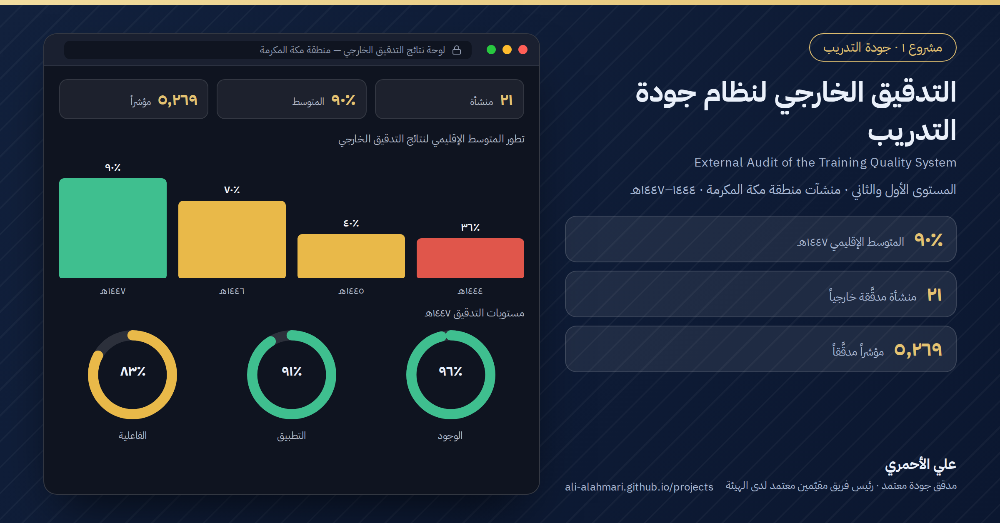
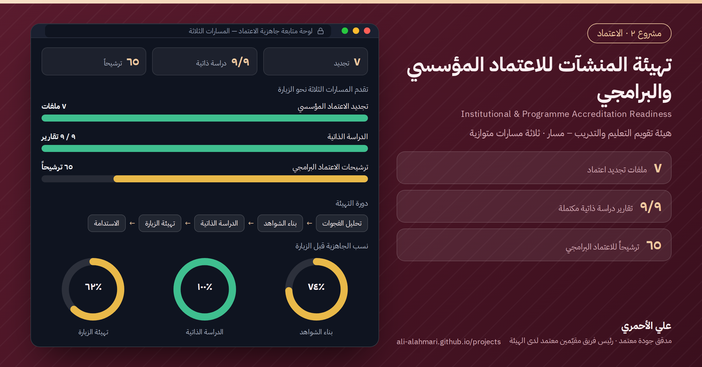
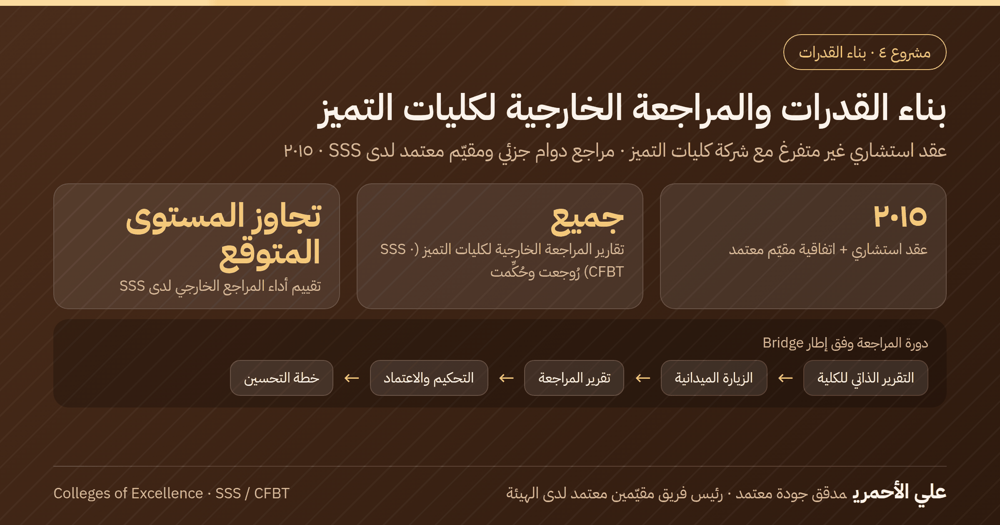
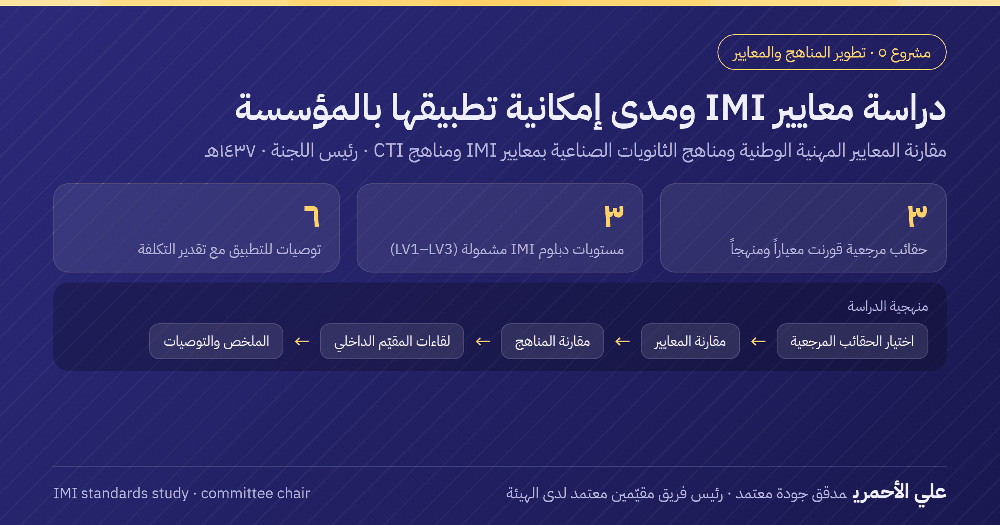
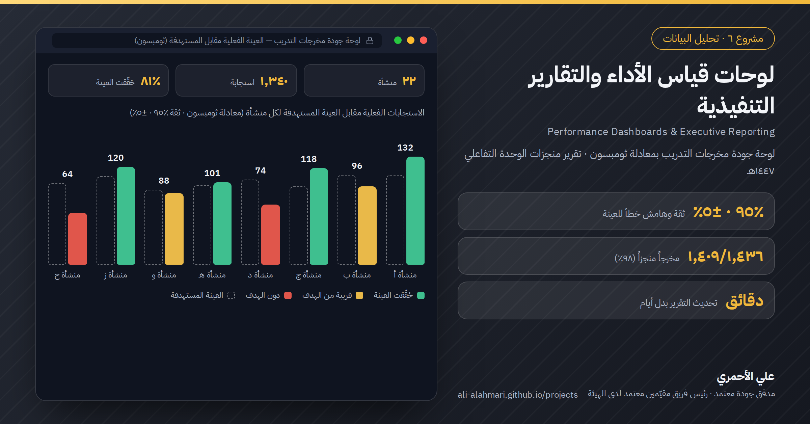
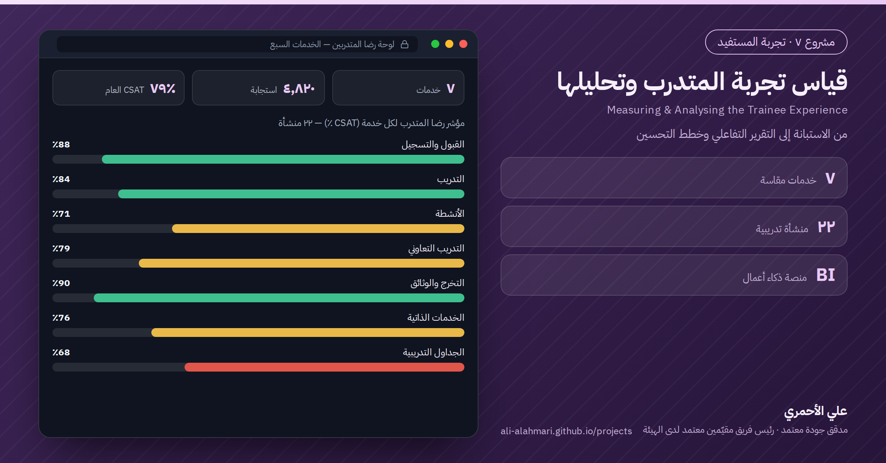

مشروع ١ · جودة التدريب
التدقيق الخارجي لنظام جودة التدريب
المستوى الأول والثاني · منشآت منطقة مكة المكرمة · ١٤٤٤–١٤٤٧هـ

مشروع ٢ · الاعتماد
تهيئة المنشآت للاعتماد المؤسسي والبرامجي
هيئة تقويم التعليم والتدريب – مسار · ثلاثة مسارات متوازية

مشروع ٣ · المعايير الوطنية
الإسهام في تطوير المعايير الوطنية
النسخة الأولى من معايير الاعتماد المؤسسي (مسار) · معايير جودة خدمات الحرمين الشريفين

مشروع ٤ · بناء القدرات
بناء القدرات والمراجعة الخارجية لكليات التميز
عقد استشاري غير متفرغ مع شركة كليات التميز · مراجع دوام جزئي ومقيّم معتمد لدى SSS · ٢٠١٥

مشروع ٥ · تطوير المناهج والمعايير
دراسة معايير IMI ومدى إمكانية تطبيقها بالمؤسسة
مقارنة المعايير المهنية الوطنية ومناهج الثانويات الصناعية بمعايير IMI ومناهج CTI · رئيس اللجنة · ١٤٣٧هـ

مشروع ٦ · تحليل البيانات
لوحات قياس الأداء والتقارير التنفيذية
لوحة جودة مخرجات التدريب بمعادلة ثومبسون · تقرير منجزات الوحدة التفاعلي ١٤٤٧هـ

مشروع ٧ · تجربة المستفيد
قياس تجربة المتدرب وتحليلها
من الاستبانة إلى التقرير التفاعلي وخطط التحسين

مشروع ٨ · الجاهزية
جاهزية المنشآت ومتابعة سير العملية التدريبية
دورة الجاهزية السنوية لـ٢٢ منشأة · متابعة أسبوعية · إشراف ميداني كل خمسة أسابيع